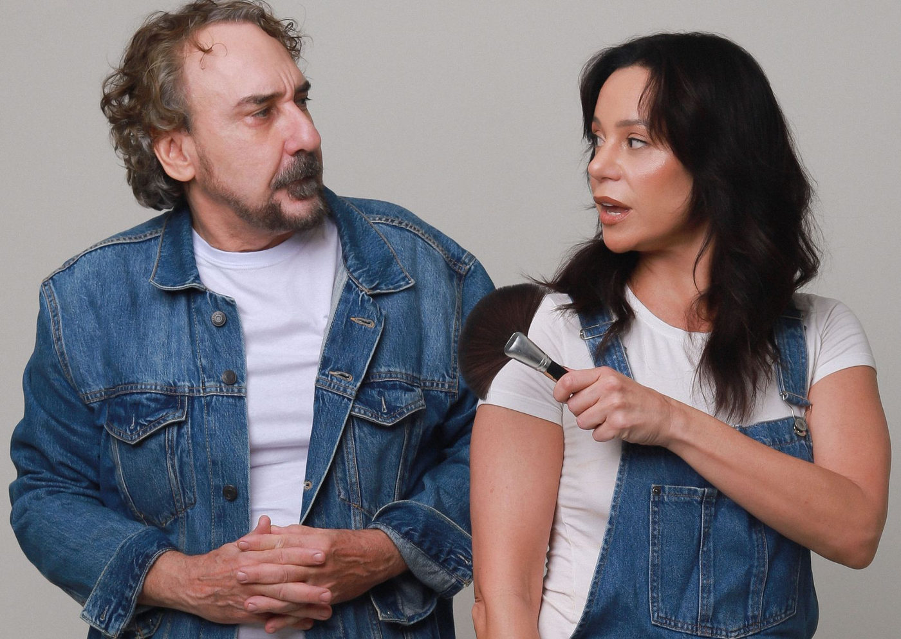

Foto — Felipe Quintini
Teatro
Vannessa Gerbelli e Charles Myara estrelam a comédia romântica Cala a Boca e Me Beija, com direção de Ernesto Piccolo
Com texto inédito de Bia Montez e Fátima Valença, espetáculo estreia em 14 de maio no Teatro Vannucci e aposta no bom humor para falar sobre os desafios da vida…